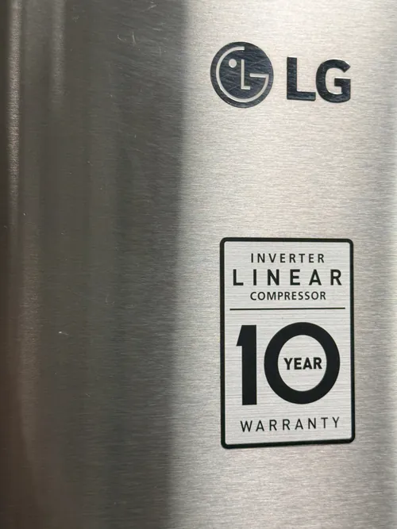

LG Refrigerator Repair: Common Error Codes and What They Mean
Modern LG refrigerators are equipped with advanced electronic control systems that continuously monitor appliance performance. These systems help detect cooling problems, sensor failures, airflow restrictions, communication issues, and other conditions that may affect refrigerator operation. When a problem is detected, the refrigerator often displays an error code to alert the homeowner that service may be needed.
While error codes can provide valuable diagnostic information, they are often misunderstood. Many homeowners assume an error code identifies a specific failed part. In reality, most error codes simply indicate the system where a problem has been detected. Accurate diagnostics remain essential because multiple components can contribute to the same error message. Professional LG refrigerator repair focuses on identifying the root cause behind the code rather than simply replacing parts based on the displayed message.
One of the most commonly reported error codes involves fan motor problems. Evaporator fans play a critical role in circulating cold air throughout the refrigerator and freezer compartments. If the control system detects abnormal fan operation, the refrigerator may display a fan related error code. In some cases, the fan itself may have failed. In other situations, frost buildup, wiring issues, sensor failures, or electronic control problems may be responsible.

Defrost system error codes are also relatively common. Modern refrigerators use automatic defrost systems to prevent excessive frost accumulation on cooling components. If the refrigerator detects a problem within the defrost circuit, heating elements, sensors, or related controls, an error code may appear. Homeowners often notice cooling problems, excessive frost, or reduced airflow alongside these warnings.
Temperature sensor related error codes can be particularly difficult to interpret without proper testing. LG refrigerators rely on multiple sensors to monitor cooling conditions throughout the appliance. If a sensor begins sending inaccurate information, the control system may display a corresponding error code. However, the actual cause may involve damaged wiring, electronic communication problems, or a failing control board rather than the sensor itself.
Ice maker related error codes are increasingly common in newer refrigerator models. Modern ice production systems rely on temperature sensors, water valves, communication circuits, and electronic controls working together properly. When one part of the system experiences a problem, the refrigerator may generate an error code associated with ice production. Professional LG refrigerator repair helps determine whether the issue involves water supply, cooling performance, electronic controls, or the ice maker assembly itself.
Communication errors represent another category frequently seen in smart refrigerators. Advanced LG refrigerators contain multiple electronic modules that exchange information continuously.
If communication between components becomes interrupted, the refrigerator may display a communication related error code. These issues can sometimes be caused by wiring problems, control board failures, software related issues, or power fluctuations affecting electronic components.Some homeowners encounter compressor related error codes. Because the compressor is one of the most important parts of the cooling system, the refrigerator monitors its operation closely. Compressor related warnings may indicate cooling performance issues, inverter system problems, sensor irregularities, or other conditions affecting refrigeration performance. Specialized diagnostics are often necessary because compressor related symptoms can overlap with several other refrigerator systems.
Power interruption codes may also appear after electrical outages, voltage fluctuations, or unexpected interruptions in refrigerator operation. While these codes sometimes clear automatically after normal power is restored, recurring electrical warnings may indicate underlying issues that deserve professional attention. Repeated power related errors can occasionally contribute to electronic control problems if left unresolved.
One of the most common mistakes homeowners make is attempting to diagnose a refrigerator solely based on the displayed code. Error codes provide useful clues, but they rarely tell the complete story. Replacing parts without proper testing may increase repair costs while leaving the original problem unresolved. Accurate diagnostics help identify the true source of the issue and reduce unnecessary repairs.
Modern refrigerators contain complex electronic systems that require professional evaluation when error codes appear. Experienced technicians use diagnostic procedures, testing equipment, and technical knowledge to determine why the refrigerator generated the warning in the first place. This approach improves repair accuracy and helps prevent recurring failures.
Professional LG refrigerator repair combines advanced diagnostics with practical troubleshooting to address both the displayed error code and the underlying cause of the problem. Whether your refrigerator is showing a fan error, sensor warning, communication fault, defrost code, or cooling related alert, proper diagnostics remain the most reliable path toward restoring normal refrigerator operation and long term appliance reliability.